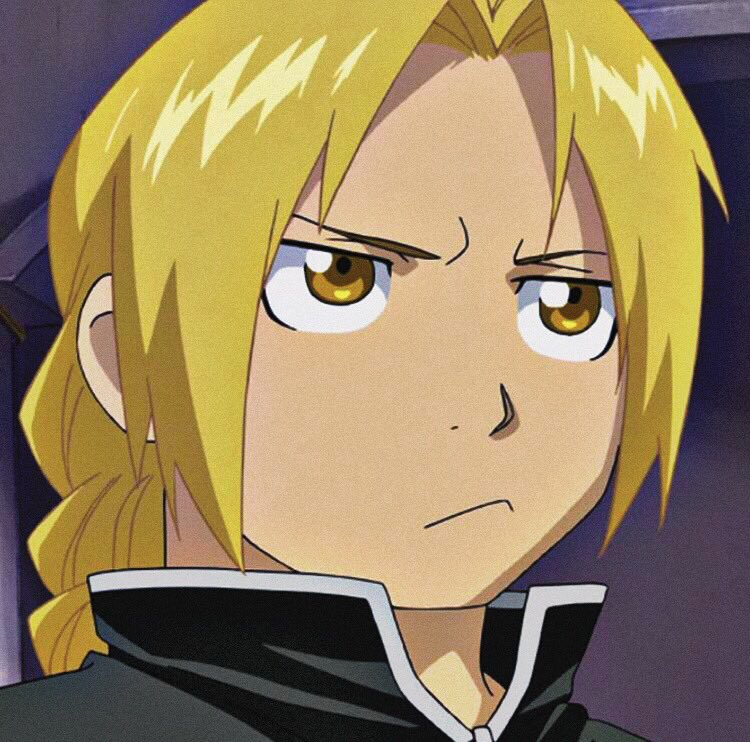
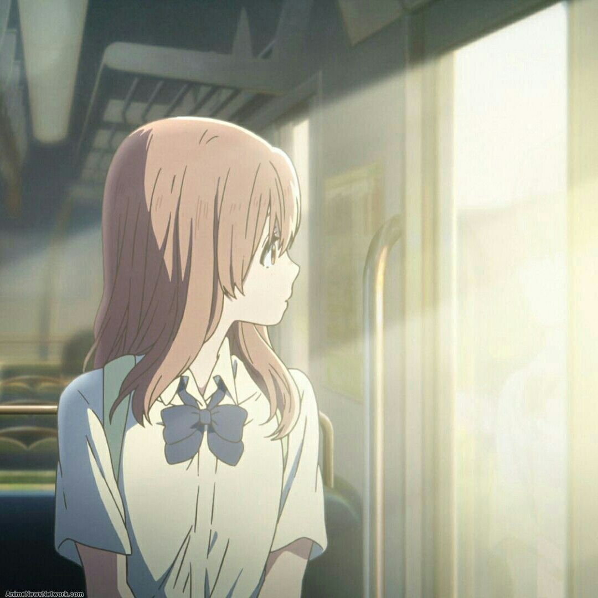
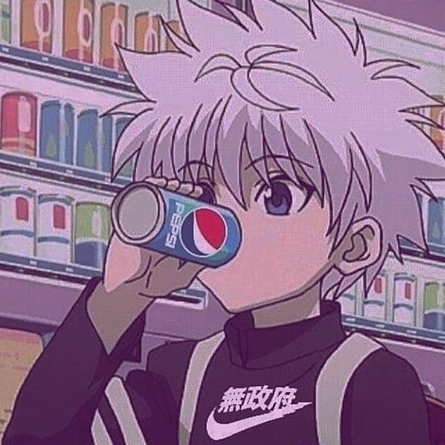
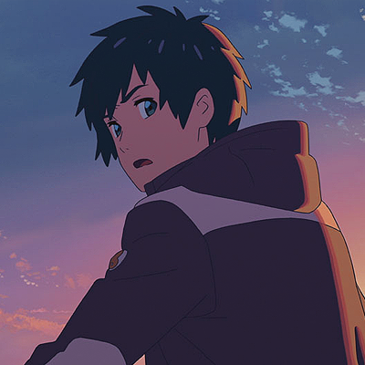
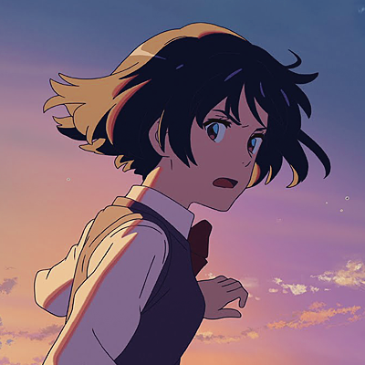

Top 10 melhores avaliações!
Critério de avaliação
Esta lista usa como fonte e base o My anime List, um site
muito conhecido pelas notas de avaliações e críticas do público, sejam elas
boas ou ruins.
Além disso, a lista também considera a disponibilidade dos animes, que podem
estar disponíveis na Netflix ou na Crunchyroll.
10- Owarimonogatari
Koyomi Araragi conhece sua nova colega de classe, uma aluna que foi
transferida cujo nome é Ougi Oshino. Ougi diz a Koyomi que gostaria de perguntá-lo
sobre uma descoberta bizarra
que fez ao olhar para o mapa da escola que ela desenhou.
O anime está disponível na Crunchyroll e sua nota é 8,93.
9- Code Geass
A história gira em torno de Lelouch Lamperouge, um garoto que mora em Britannia, um império.
Apesar de introvertido e muito inteligente, o Lelouch guarda um segredo: ele é um sucessor do trono
da Britannia.
O anime está disponível na Netflix e sua nota é 8,91.
8- Haikyuu!
Haikyuu é umanime de voleibol e foca em Hinata Shoyo, que ama jogar voleibol e apesar de ser baixinho,
faz de tudo para ser como o 'Pequeno Gigante', seu ídolo. Por isso, ele passa
por tudo para poder realizar esse sonho, até mesmo enfrentar o 'Rei da Quadra', cujo
nome real é Kageyama Tobio.
O anime está disponível na Crunchyroll e sua nota é de 8,9.
7- Fullmetal Alchemist Brotherhood

O anime conta a história de dois irmãos que vivem tentando trazer sua mãe de volta a vida.
Mas, de acordo com a história, para que isso aconteça eles deverão sacrificar algo do mesmo valor.
Apesar disso tudo, os dois irmãos acabam sabendo da existência de uma Pedra Filosofal, que pode
trazer sua mãe de volta sem um sacrifício. Portanto, isso acaba levando-os a uma batalha mais
assustadora do que pensavam.
O anime está disponível na Netflix e na Crunchyroll e sua nota é 9,22.
6- Attack on Titan


A série de mangá e anime Attack on Titan se trata de um mundo onde
a humanidade vive dentro de cidades que são cercadas com a finalidade de proteção. Isso se deve ao fato
de, no mundo retratado, existir seres enormes que se alimentam por humanos chamados Titãns.
Além disso, a história também fala de Eren Yeager e seus dois aliados que vivem apeenas para matar
os titãns.
O anime está disponível na Crunchyroll e sua nota é de 9,07.
5- March Comes in like a Lion
Rei é órfão e não tem amigos, mas apesar disso, ele consegue se tornar um jogador
profissional de shogi enquanto é apenas um adolescente. Mas, ele passa a aprender mais
coisas sobre o mundo real quando sus irmãs começam a cuidar dele. O anime é muito recomendado
e aborda vários temas sérios.
O anime está disponível na Netflix e na Crunchyroll e sua nota é 9,01.
4- Koe no Katachi

Apesar de achar que não merece o perdão dela, um valentão da escola está determinado a
fazer as pazes com ua garota surda que ele atordoava na época da escola.
O anime está disponível na Netflix e sua nota é 9,1.
3-Gintama
É muito conhecido por ser um anime que contém um pouquinho de outros animes.
Mas, também fala do herói Sakata Gintoki, uma das pessoas que fundaram o grupo Yorozuya,
o qual faz tarefas como mercenários pelo mundo.
O anime está disponível na Crunchyroll e sua nota é de 9,12.
2- Hunter X Hunter (versão 2011)

A história gira em torno do protagonista Gon Freecss, um menino de 12 anos que quer
encontrar o seu pai a todo o custo, então ele decide se tornar um "Hunter", assim seu
pai com a finalidade de encontrá-lo. Gon faz amizade com outros três Hunters: Leorio,
Kurapika e Killua, que o acompanham em suas aventuras
O anime está disponível na Crunchyroll e sua nota é de 9,11.
1- Your name


Uma menina e um menino, que vivem bem distantes um do outro e nem se conhecem, acabam
trocando de corpos todas as vezes que eles sonham e o que causa isso é um verdadeiro
mistério. Porém, acontece um acidente e o garoto percebe o quão apaixonado ele está por ela.
O anime está disponível na Netflix e sua nota é 9.